Microduck reverse-engineering · new sources · 1 of 3
MakerWorld 3250889 — "structural parts (simulation model export · 15 parts)"
What the page states, what the files are, where they come from, and what they measure against Pollen's meshes and against our rebuild. Generated from out/sources/makerworld-3250889.json.
1Verdict — NOT READY TO BUILD FROM, and not a new source of geometry
microduck_rl assets at commit 5946fd9, placed at qpos 0 with the trunk at the origin and scaled to millimetres. Measured order-matched against our own placement of those assets: worst vertex delta 8.4e-06 mm over all 796,792 triangles — float32 re-serialisation, nothing else. Bytes 80..end of every file are identical to cad/ of fanhao375/microduck-replica at 28d8ee9.instances: [], isPrintable: false, empty projectSettings on all 15 files, design_guide [], design_bom []. The upstream repo's build log has a Print Records table that reads "(TBD)". There is nothing to agree or disagree with per parameter (§7).cecad.mjcf. (b) The origin of SPEC.md:75-76's community hole census, now archived per hole (docs/hole_analysis.json, 47 meshes). (c) The first photograph of parts printed from these meshes with M2 screws fitted (2026-09-02), which is evidence about the hole pattern, not about print settings.2What the page states — verbatim, from the design API
The HTML is behind a Cloudflare challenge for curl, WebFetch and headless Chrome alike (403, archived). The design API answered anonymously and is archived at reference/makerworld-3250889/page/api-design-3250889.json.
| URL | https://makerworld.com/en/models/3250889-microduck-robotic-duck-structural-parts-simulation |
| Title | Microduck 机器鸭结构件（仿真模型导出 · 15 分件） MakerWorld's translation: Microduck robotic duck structural parts (simulation model export · 15 separate parts) |
| Author | Peter Pan's Techland · handle foo00 · uid 2020122555 · level 6 |
| Created / files uploaded | 2026-09-02T04:01:04Z / 2026-09-02T03:49:30Z |
| Licence | API BY-NC-SA; author's text "非商用 · CC BY-SA-NC"; allowReCreation True; originals on MakerWorld: [] |
| Lineage stated | pollen-robotics/microduck_rl MJCF simulation model, world transform applied (author's summary) |
| Summary (zh) | 25cm 双足机器鸭外观结构件，15 个部件分开打印 来源官方 microduck_rl 仿真 MJCF，非官方 CAD 需自行采购 Dynamixel XL330 ×15 等硬件，本模型仅为外壳/结构参考 非商用 · CC BY-SA-NC 文件来源 从 Pollen Robotics 官方公开的 `microduck_rl` MJCF 仿真模型反推导出，已应用世界坐标变换，可直接导入切片软件。 原始几何来源：[ pollen-robotics/microduck_rl ] ( https://github.com/pollen-robotics/microduck_rl ) |
| Summary (MakerWorld translation) | 25cm biped robotic duck exterior structural parts, 15 separate parts for printing Sourced from official microduck_rl simulation MJCF, not official CAD You need to purchase hardware such as Dynamixel XL330 ×15 separately, this model is only for shell/structural reference Non-commercial · CC BY-SA-NC File source Derived from Pollen Robotics official public `microduck_rl` MJCF simulation model with world coordinate transformation applied, can be imported directly into slicing software Original geometry source: [ pollen-robotics/microduck_rl ] ( https://github.com/pollen-robotics/microduck_rl ) |
| Tags / category | microduck, pollen robotics, 双足机器人, rl, 3D 打印, 复刻研究 (microduck, pollen robotics, Biped robot, rl, 3D Printing, Replication research) · Education > Other Education Models |
| Counters at fetch | downloads 5 · likes 2 · prints 0 · comments 0 |
| Print profiles | instances 0 · isPrintable False · preset type "" · all 15 projectSettings empty: True |
| Guide / BOM / pictures / steps | [] / [] / [] / [] |
| Download | /api/v1/design-service/design/3250889/model → 403 {"code":1,"error":"Please log in to download models."} (measured 2026-09-03). Archive here is Leif's logged-in download: Leif, logged in, 2026-09-03 22:11:54 local (file mtime), 16,124,216 bytes, sha256 910ac19a11c90278…; entry names UTF-8 with zip flag 0x800 (measured on the raw central directory); re-extraction by tools/extract_makerworld.py (re-extraction sha256-identical to files/) |
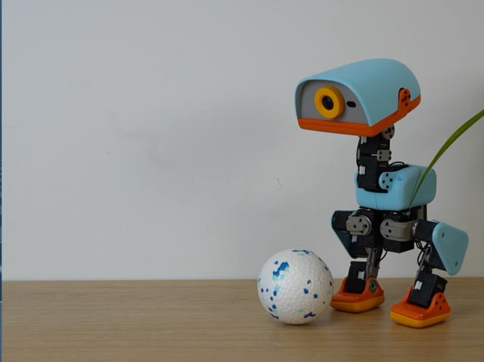
The 15 per-file renders MakerWorld generated (grey, unlit, no scale):
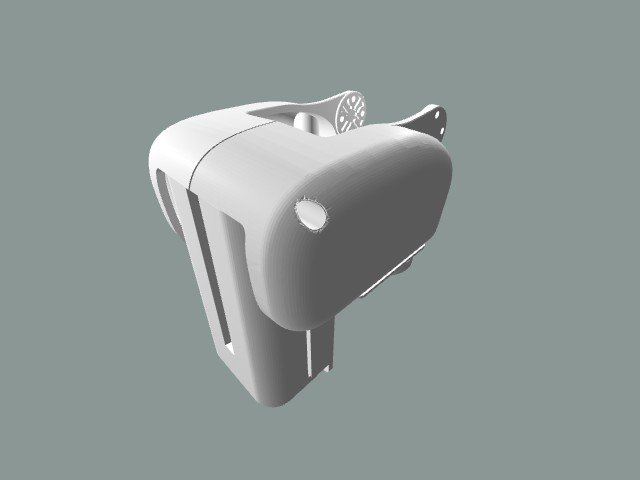
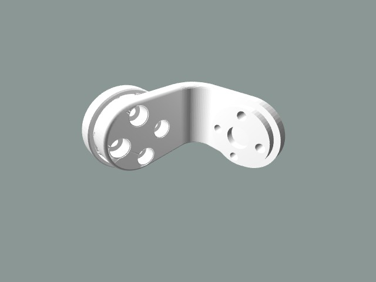
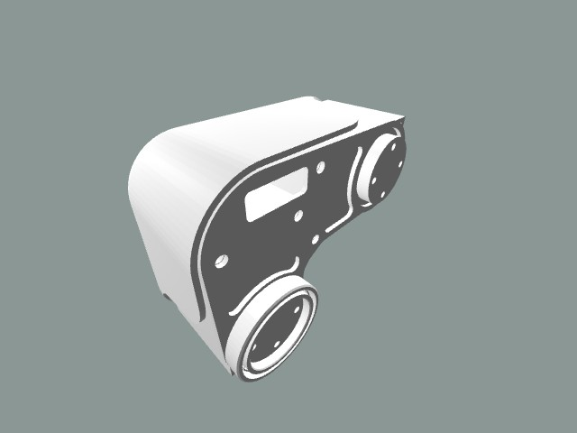
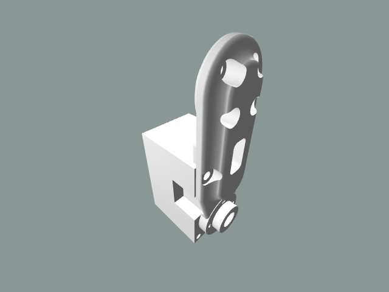
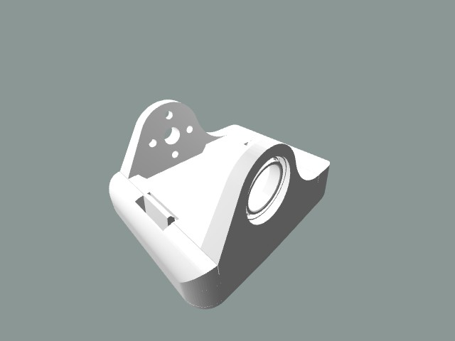
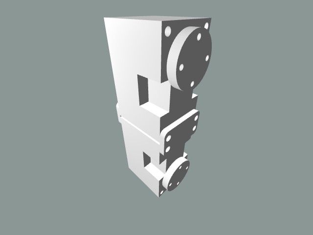
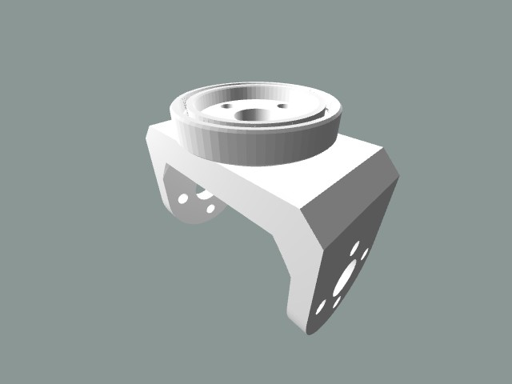
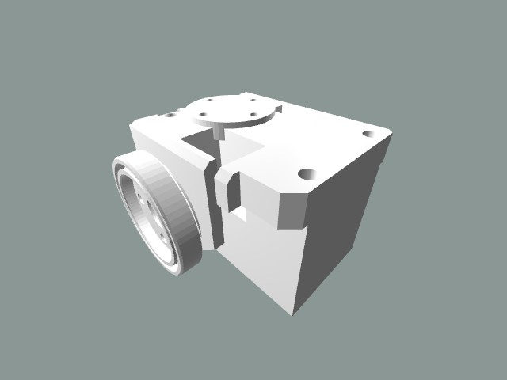
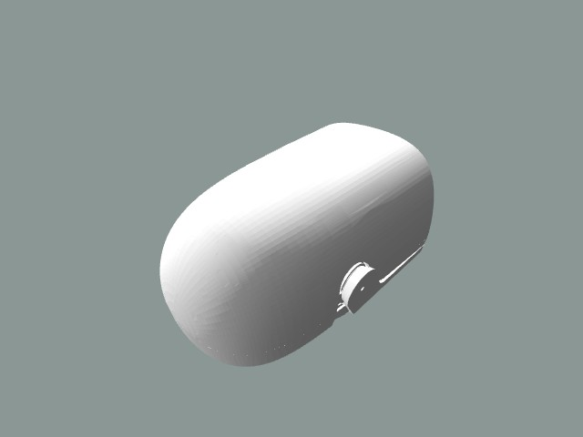
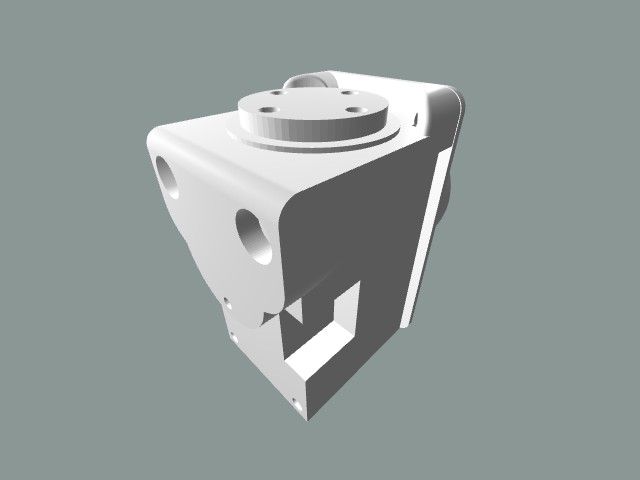
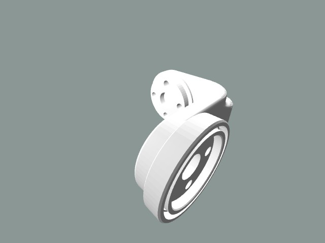
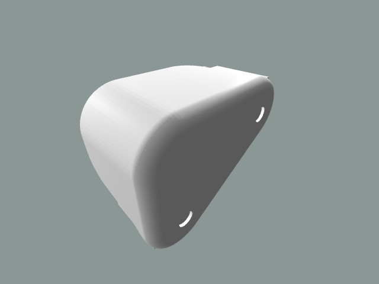
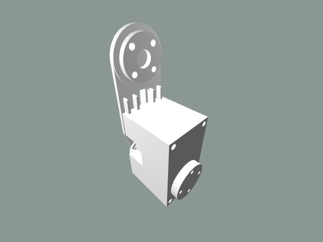
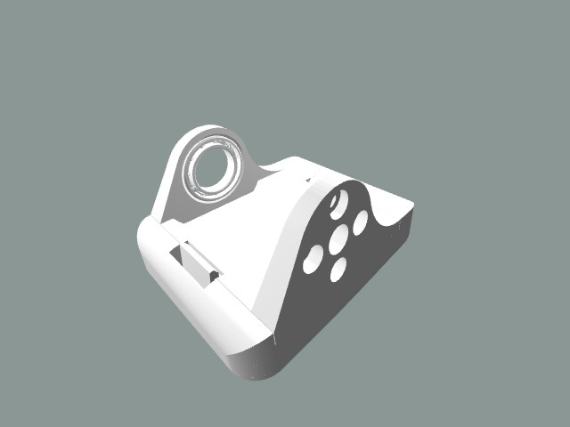
3Where the files come from — the chain, pinned
- pollen-robotics/microduck_rl @ 5946fd9cdbc58956424420153e51975af3b30d77 — src/mjlab_microduck/robot/microduck/assets (47 STL, metres, part frames) + robot_allcollisions.xml
- fanhao375/microduck-replica @ 28d8ee92638c42c8547aae5b194f357e25d51fc9 — scripts/export_assembly_stl.py: MuJoCo mj_forward at qpos 0, group-2 (visual) geoms concatenated per body, x1000 to mm, 80 zero bytes header -> cad/01..15
- MakerWorld 3250889 (Peter Pan's Techland, 2026-09-02T03:49:30Z) — the same 15 files; MakerWorld re-serialises the header to 'MW 1.0 3250889 US' on download
| GitHub repo | fanhao375/microduck-replica — Microduck 复刻 · 从官方 MJCF 与 Rust 源码反推出的装配图、CAD 装配体与完整电控方案 | Mechanical + electronics reconstruction of Pollen Robotics' Microduck |
| Created / last push / stars / forks | 2026-08-28T13:42:48Z / 2026-09-03T13:51:07Z / 414 / 73 |
| Licence | dual: scripts/ Apache-2.0; assembly-drawings/ and cad/ CC BY-SA-NC 4.0 (LICENSE, NOTICE.md) |
| Pinned commit | 28d8ee92638c42c8547aae5b194f357e25d51fc9, fetched 2026-09-04, archived at reference/makerworld-3250889/upstream-github-fanhao375-microduck-replica |
| Body identity | bytes 80..end of each MakerWorld file == bytes 80..end of the GitHub cad/ file at the pinned commit; the first 80 bytes are the STL header — all 15 identical: True. GitHub header: 80 zero bytes; MakerWorld header: MW 1.0 3250889 US. |
| Uploader ↔ repo owner | CANNOT DETERMINE — the MakerWorld uploader (foo00 / GitHub peterpanstechland, a maker who forked mjlab on 2026-08-29) and the repo owner (fanhao375) are different account names; nothing on either side names the other. The bytes are the same either way. |
What the replica repo adds beyond the STLs
- cad/零件对照表.json — the same per-body source-mesh list this lane measured (tri counts agree on all 15)
- docs/紧固件反推.md + docs/hole_analysis.json — the hole census SPEC.md:75-76 already cites as [C]: Ø2.2 x77, Ø4.4 x28, Ø1.6 x20, ~146 structural clearance holes; per-hole diameter/depth/coverage for all 47 meshes
- assembly-drawings/ — 7 MuJoCo renders incl. two exploded views with body masses
- build-log/photos/2026-09-02-首批打印件.jpg — first photograph of parts printed from these meshes: head shell (white/black/red multi-colour), trunk shell, black leg parts WITH M2 screws fitted, two feet (red/yellow). The Print Records table (material, layer, infill, time, printer) is '(TBD)' — no print parameters are recorded anywhere in the repo either
- the repo's own caveat, verbatim: '仿真 STL ≠ 可打印工程件。仿真只关心外形与惯量，不保证配合公差、螺纹孔、热熔螺母座和走线空间。直接打印大概率装不起来'
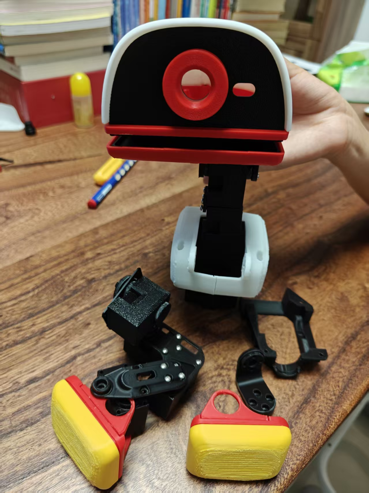

4The 15 files, measured
Bounding box in the file's own frame (trunk body at origin, mm), triangle and unique-vertex counts, boundary edges (0 = every shell closed), the order-matched max vertex delta against Pollen's rl 5946fd9 assets placed by cecad.mjcf, and cecad.meshcompare p95 surface distance (15 000 samples each way, bbox-centre aligned, tol 1.0 mm / 1.5 mm) against Pollen's decimated simulator body and against OUR rebuild assembled per body.
| # | File | Size x × y × z (mm) | Tris | Verts | Open edges | Δ vs rl 5946fd9 (mm) | p95 vs Pollen sim body (mm) | p95 vs our rebuild (mm) | Verdict vs ours |
|---|---|---|---|---|---|---|---|---|---|
| 01 | 01_躯干主体.stl躯干主体 · torso main body | 81.333 × 64.029 × 86.094 | 131,020 | 65344 | 0 | 3.8e-06 | 0.0278 / 0.0342 | 0.1887 / 0.1924 | PASS |
| 02 | 02_左髋yaw-roll.stl左髋yaw-roll · left hip, yaw-roll stage | 31.000 × 23.000 × 40.000 | 39,920 | 19884 | 0 | 2.6e-06 | 0.0238 / 0.1335 | 0.0499 / 0.0251 | PASS |
| 03 | 03_左髋roll.stl左髋roll · left hip, roll stage | 36.000 × 34.500 × 22.000 | 41,940 | 20912 | 0 | 2.4e-06 | 0.0337 / 0.0583 | 0.2029 / 0.1369 | PASS |
| 04 | 04_左大腿.stl左大腿 · left thigh | 60.997 × 32.000 × 47.659 | 45,072 | 22461 | 0 | 4.2e-06 | 0.0286 / 0.0591 | 0.0888 / 0.0900 | PASS |
| 05 | 05_左小腿.stl左小腿 · left shin | 20.000 × 32.000 × 61.500 | 18,902 | 9431 | 0 | 4.6e-06 | 0.0204 / 0.1070 | 0.0225 / 0.0489 | PASS |
| 06 | 06_左踝脚.stl左踝脚 · left ankle + foot | 54.000 × 41.099 × 34.226 | 61,658 | 30580 | 0 | 4.7e-06 | 0.0196 / 0.0182 | 0.0676 / 0.0745 | PASS |
| 07 | 07_颈根.stl颈根 · neck root | 20.000 × 29.000 × 69.000 | 11,188 | 5570 | 0 | 4.2e-06 | 0.0190 / 0.1622 | 0.0063 / 0.0149 | PASS |
| 08 | 08_颈俯仰.stl颈俯仰 · neck pitch stage | 22.000 × 35.000 × 29.793 | 28,090 | 13905 | 0 | 4.0e-06 | 0.0377 / 0.0515 | 0.0082 / 0.0083 | PASS |
| 09 | 09_头yaw-roll.stl头yaw-roll · head yaw-roll stage | 38.000 × 35.500 × 29.000 | 51,880 | 25747 | 0 | 7.9e-06 | 0.0375 / 0.0697 | 0.0429 / 0.0483 | PASS |
| 10 | 10_头部总成.stl头部总成 · head assembly | 122.690 × 91.763 × 59.282 | 159,540 | 79414 | 0 | 8.4e-06 | 0.0612 / 0.0685 | 0.0800 / 0.0886 | PASS |
| 11 | 11_右髋yaw-roll.stl右髋yaw-roll · right hip, yaw-roll stage | 31.000 × 23.000 × 40.000 | 39,920 | 19884 | 0 | 2.6e-06 | 0.0240 / 0.1335 | 0.0500 / 0.0272 | PASS |
| 12 | 12_右髋roll.stl右髋roll · right hip, roll stage | 36.000 × 34.500 × 22.000 | 41,940 | 20912 | 0 | 2.4e-06 | 0.0340 / 0.0608 | 0.1920 / 0.1411 | PASS |
| 13 | 13_右大腿.stl右大腿 · right thigh | 60.997 × 32.000 × 47.659 | 45,072 | 22461 | 0 | 4.2e-06 | 0.0280 / 0.0833 | 0.0894 / 0.0825 | PASS |
| 14 | 14_右小腿.stl右小腿 · right shin | 20.000 × 32.000 × 61.500 | 18,902 | 9431 | 0 | 4.6e-06 | 0.0207 / 0.0917 | 0.0241 / 0.0500 | PASS |
| 15 | 15_右踝脚.stl右踝脚 · right ankle + foot | 54.000 × 41.099 × 34.227 | 61,748 | 30640 | 0 | 4.7e-06 | 0.0183 / 0.0176 | 0.0672 / 0.0645 | PASS |
Worst p95 against our rebuild so far: 0.2029 / 0.1924 mm (MW→ours / ours→MW). The Pollen simulator bodies are 4.2× coarser (decimated) than the rl assets, which is why they show 0.02–0.16 mm; the rl-asset comparison is exact and is the one that matters.
5What each file contains — and why none prints as shipped
Read off the vertex blocks (each file preserves the source-mesh order of the MJCF body). Vendor bodies are in bold: they are inside the file as closed shells overlapping the printed pocket that holds them.
| # | File | MJCF body | Printed structural meshes | Soft (TPU) | Vendor bodies fused in | Printable as shipped |
|---|---|---|---|---|---|---|
| 01 | 01_躯干主体.stl | trunk_base | right_shell, banana_pcb_locker, trunk_base, power_support, left_shell | — | seeed_bearing__configuration__22x16x4, xl330, np_f970, xl330, seeed_bearing__configuration__22x16x4 | FAIL |
| 02 | 02_左髋yaw-roll.stl | yaw2roll | yaw2roll, bearing_roll | — | xl330, seeed_bearing__configuration__22x16x4 | FAIL |
| 03 | 03_左髋roll.stl | hip_l | hip_l | — | seeed_bearing__configuration__22x16x4 | FAIL |
| 04 | 04_左大腿.stl | upper_leg_left | upper_leg_left, upper_leg_rigidity_plate | — | xl330, seeed_bearing__configuration__22x16x4, xl330 | FAIL |
| 05 | 05_左小腿.stl | leg | leg | — | xl330 | FAIL |
| 06 | 06_左踝脚.stl | ankle_left | foot_left, ankle_left | sole_left | seeed_bearing__configuration_default | FAIL |
| 07 | 07_颈根.stl | neck | neck, neck | — | xl330, xl330 | FAIL |
| 08 | 08_颈俯仰.stl | neck_pitch | neck_pitch | — | seeed_bearing__configuration__22x16x4 | FAIL |
| 09 | 09_头yaw-roll.stl | yaw_roll_motion | yaw_roll_motion | — | xl330, seeed_bearing__configuration__22x16x4, seeed_bearing__configuration__22x16x4 | FAIL |
| 10 | 10_头部总成.stl | jaw_soft | face_part, motor_support, top_head_shell, noenoeil, jaw, bottom_head_shell, m12_lens_holder | jaw_soft, soft_mouth_top | lens, xl330, xl330, seeed_bearing__configuration_default, elec_rpi_robot_hat_pcb, pcb__raspberry_pi_zero_2_w, speaker | FAIL |
| 11 | 11_右髋yaw-roll.stl | bearing_roll | yaw2roll, bearing_roll | — | xl330, seeed_bearing__configuration__22x16x4 | FAIL |
| 12 | 12_右髋roll.stl | hip_l_2 | hip_l | — | seeed_bearing__configuration__22x16x4 | FAIL |
| 13 | 13_右大腿.stl | upper_leg_right | upper_leg_rigidity_plate, upper_leg_right | — | xl330, seeed_bearing__configuration__22x16x4, xl330 | FAIL |
| 14 | 14_右小腿.stl | leg_2 | leg | — | xl330 | FAIL |
| 15 | 15_右踝脚.stl | ankle_right | ankle_right, foot_right | sole_right | seeed_bearing__configuration_default | FAIL |
6Per constituent part — does it match our model?
Because the files are the rl assets, the per-part question is already answered by our refcheck grades against those same assets (out/refcheck/<slug>/verify/, read-only here): p95 both ways and the hole/boss feature match. "NO REBUILD" means our assembly carries the vendor mesh itself, so the match is trivial and says nothing.
| Mesh | Role | Our part | In files | Refcheck | p95 ref→ours / ours→ref (mm) | Features | Graded against |
|---|---|---|---|---|---|---|---|
ankle_left | printed structural part | part:microduck-ankle-left | 06 | PASS | 0.0118 / 0.0119 | PASS · 13 matched, 0 ref unmatched, 0 extra | reference/pollen-microduck-rl/assets/ankle_left.stl |
ankle_right | printed structural part | part:microduck-ankle-right | 15 | PASS | 0.0122 / 0.0117 | PASS · 13 matched, 0 ref unmatched, 0 extra | reference/pollen-microduck-rl/assets/ankle_right.stl |
banana_pcb_locker | printed structural part | part:microduck-banana-pcb-locker | 01 | PASS | 0.0130 / 0.0125 | PASS · 2 matched, 0 ref unmatched, 0 extra | reference/pollen-microduck-rl/assets/banana_pcb_locker.stl |
bearing_roll | printed structural part | part:microduck-bearing-roll | 02, 11 | PASS | 0.0014 / 0.0017 | PASS · 5 matched, 0 ref unmatched, 1 extra | reference/pollen-microduck-rl/assets/bearing_roll.stl |
bottom_head_shell | printed structural part | part:microduck-bottom-head-shell | 10 | NO REBUILD | — / — | — | — |
face_part | printed structural part | part:microduck-face-part | 10 | NO REBUILD | — / — | — | — |
foot_left | printed structural part | part:microduck-foot-left | 06 | PASS | 0.3733 / 0.2840 | PASS · 2 matched, 0 ref unmatched, 0 extra | reference/pollen-microduck-rl/assets/foot_left.stl |
foot_right | printed structural part | part:microduck-foot-right | 15 | PASS | 0.3229 / 0.2502 | PASS · 2 matched, 0 ref unmatched, 0 extra | reference/pollen-microduck-rl/assets/foot_right.stl |
hip_l | printed structural part | part:microduck-hip-bracket | 03, 12 | PASS | 0.1577 / 0.2539 | PASS · 21 matched, 0 ref unmatched, 3 extra | reference/pollen-microduck-rl/assets/hip_l.stl |
jaw | printed structural part | part:microduck-jaw | 10 | NO REBUILD | — / — | — | — |
left_shell | printed structural part | part:microduck-trunk-shell-left | 01 | NO REBUILD | — / — | — | — |
leg | printed structural part | part:microduck-shin | 05, 14 | NO REBUILD | — / — | — | — |
m12_lens_holder | printed structural part | part:microduck-m12-lens-holder | 10 | NO REBUILD | — / — | — | — |
motor_support | printed structural part | part:microduck-motor-support | 10 | PASS | 0.3495 / 0.4510 | PASS · 6 matched, 0 ref unmatched, 0 extra | reference/pollen-microduck-rl/assets/motor_support.stl |
neck | printed structural part | part:microduck-neck-plate | 07 | PASS | 0.0008 / 0.0009 | PASS · 5 matched, 0 ref unmatched, 0 extra | reference/pollen-microduck-rl/assets/neck.stl |
neck_pitch | printed structural part | part:microduck-neck-pitch-bracket | 08 | PASS | 0.0069 / 0.0074 | PASS · 21 matched, 0 ref unmatched, 0 extra | reference/pollen-microduck-rl/assets/neck_pitch.stl |
noenoeil | printed structural part | part:microduck-eye-ring | 10 | NO REBUILD | — / — | — | — |
power_support | printed structural part | part:microduck-power-support | 01 | PASS | 0.2133 / 0.2284 | PASS · 14 matched, 0 ref unmatched, 7 extra | reference/pollen-microduck-rl/assets/power_support.stl |
right_shell | printed structural part | part:microduck-trunk-shell-right | 01 | NO REBUILD | — / — | — | — |
top_head_shell | printed structural part | part:microduck-top-head-shell | 10 | NO REBUILD | — / — | — | — |
trunk_base | printed structural part | part:microduck-trunk-base | 01 | PASS | 0.0005 / 0.0008 | PASS · 6 matched, 0 ref unmatched, 0 extra | reference/pollen-microduck-rl/assets/trunk_base.stl |
upper_leg_left | printed structural part | part:microduck-upper-leg-left | 04 | PASS | 0.2000 / 0.2000 | PASS · 6 matched, 0 ref unmatched, 0 extra | reference/pollen-microduck-rl/assets/upper_leg_left.stl |
upper_leg_right | printed structural part | part:microduck-upper-leg-right | 13 | PASS | 0.2000 / 0.2000 | PASS · 6 matched, 0 ref unmatched, 0 extra | reference/pollen-microduck-rl/assets/upper_leg_right.stl |
upper_leg_rigidity_plate | printed structural part | part:microduck-upper-leg-rigidity-plate | 04, 13 | PASS | 0.0078 / 0.0077 | PASS · 6 matched, 0 ref unmatched, 1 extra | reference/pollen-microduck-rl/assets/upper_leg_rigidity_plate.stl |
yaw2roll | printed structural part | part:microduck-yaw2roll | 02, 11 | PASS | 0.0500 / 0.0500 | PASS · 19 matched, 0 ref unmatched, 0 extra | reference/pollen-microduck-rl/assets/yaw2roll.stl |
yaw_roll_motion | printed structural part | part:microduck-yaw-roll-motion | 09 | PASS | 0.4223 / 0.9337 | PASS · 6 matched, 0 ref unmatched, 13 extra | reference/pollen-microduck-simulator/meshes/yaw_roll_motion.stl |
jaw_soft | soft part (TPU) | part:microduck-jaw-soft | 10 | NO REBUILD | — / — | — | — |
soft_mouth_top | soft part (TPU) | part:microduck-soft-mouth-top | 10 | NO REBUILD | — / — | — | — |
sole_left | soft part (TPU) | part:microduck-sole-left | 06 | PASS | 0.0513 / 0.0521 | PASS · 0 matched, 0 ref unmatched, 0 extra | reference/pollen-microduck-rl/assets/sole_left.stl |
sole_right | soft part (TPU) | part:microduck-sole-right | 15 | PASS | 0.0534 / 0.0545 | PASS · 0 matched, 0 ref unmatched, 0 extra | reference/pollen-microduck-rl/assets/sole_right.stl |
elec_rpi_robot_hat_pcb | vendor part (not printed) — Robot HAT PCB | part:microduck-robot-hat-pcb | 10 | PASS | 0.0081 / 0.0076 | PASS · 61 matched, 0 ref unmatched, 0 extra | reference/pollen-microduck-rl/assets/elec_rpi_robot_hat_pcb.stl |
lens | vendor part (not printed) — M12 lens | part:microduck-m12-lens | 10 | NO REBUILD | — / — | — | — |
np_f970 | vendor part (not printed) — NP-F battery | part:np-f550 | 01 | PASS | 0.8009 / 0.6052 | PASS · 6 matched, 0 ref unmatched, 0 extra | reference/pollen-microduck-rl/assets/np_f970.stl |
pcb__raspberry_pi_zero_2_w | vendor part (not printed) — compute board (Radxa Zero 3W footprint) | part:radxa-zero-3w | 10 | PASS | 0.0065 / 0.0056 | PASS · 44 matched, 0 ref unmatched, 0 extra | reference/pollen-microduck-rl/assets/pcb__raspberry_pi_zero_2_w.stl |
seeed_bearing__configuration__22x16x4 | vendor part (not printed) — 22x16x4 ball bearing | part:bearing-22x16x4 | 01, 02, 03, 04, 08, 09, 11, 12, 13 | PASS | 0.0187 / 0.0092 | PASS · 2 matched, 0 ref unmatched, 4 extra | reference/pollen-microduck-rl/assets/seeed_bearing__configuration__22x16x4.stl |
seeed_bearing__configuration_default | vendor part (not printed) — 15x10x3 ball bearing | part:bearing-15x10x3 | 06, 10, 15 | PASS | 0.0925 / 0.0323 | PASS · 2 matched, 0 ref unmatched, 4 extra | reference/pollen-microduck-rl/assets/seeed_bearing__configuration_default.stl |
speaker | vendor part (not printed) — speaker placeholder box | part:microduck-speaker | 10 | PASS | 0.0000 / 0.0000 | PASS · 0 matched, 0 ref unmatched, 0 extra | reference/pollen-microduck-rl/assets/speaker.stl |
xl330 | vendor part (not printed) — Dynamixel XL330-M288-T servo | part:xl330-m288-t | 01, 02, 04, 05, 07, 09, 10, 11, 13, 14 | PASS | 0.0500 / 0.0075 | PASS · 14 matched, 0 ref unmatched, 0 extra | reference/pollen-microduck-rl/assets/xl330.stl |
7Print profile — the source beside docs/DFM.md, parameter by parameter
| Parameter | MakerWorld 3250889 states | Ours (docs/DFM.md) | Agree / disagree |
|---|---|---|---|
| printer / bed | not stated (no instance, no preset) | prusa_mk4 bed for the geometry checks; the farm is a Bambu Lab H2S (docs/DFM.md) | CANNOT DETERMINE the source states nothing to agree or disagree with |
| nozzle | not stated | 0.4 mm | CANNOT DETERMINE the source states nothing to agree or disagree with |
| layer height | not stated (projectSettings.layerHeight '') | 0.20 mm | CANNOT DETERMINE the source states nothing to agree or disagree with |
| walls / perimeters | not stated (projectSettings.wallLoops '') | 2 perimeters minimum; 0.80 mm floor for a real wall | CANNOT DETERMINE the source states nothing to agree or disagree with |
| infill | not stated (projectSettings.sparseInfillDensity '') | not fixed in DFM.md; grams come from the farm's slice (out/print/slice.json) | CANNOT DETERMINE the source states nothing to agree or disagree with |
| material | not stated | PLA 1.26 g/cm3 for structure, TPU for the soles | CANNOT DETERMINE the source states nothing to agree or disagree with |
| supports | not stated | support area measured per orientation; 5 parts need none, 15 need some (DFM.md summary table) | CANNOT DETERMINE the source states nothing to agree or disagree with |
| orientation | not stated; geometry is in the robot's standing pose (world transform applied) | chosen per part on elevated overhang area (tools/dfm_orient.py) | DISAGREE the source's orientation is the robot pose, not a print orientation |
| brim | not stated | workshop rule: no brim on any print; DFM.md flags shin's 3.6 mm2 foot as the conflict | CANNOT DETERMINE the source states nothing to agree or disagree with |
| part grouping | 15 files, one per MJCF body, each with its servos/bearings/battery/PCBs fused in | one file per printed part; vendor parts are separate BOM rows (38 rows, 0 fasteners as of 2026-09-03) | DISAGREE the source's unit of printing is the MJCF body with vendor parts fused in; ours is the printed part |
| assembly guide / fasteners | none (design_guide [], design_bom [], boms* empty) | docs/BOM.md, ce-assemblies/microduck/current/bom.json; fastener census 145 M2 holes (SPEC.md:75-76) | CANNOT DETERMINE the source states nothing to agree or disagree with |
| stated dimension / mass | '25cm' in the summary only | envelope 144.1 x 141.0 x 264.0 mm, 737.2 g summed MJCF (SPEC.md §2) | CANNOT DETERMINE the source states nothing to agree or disagree with |
8What a simulation mesh cannot carry — and this one does not
The hope was that a "printable" source would carry fastener seats, insert bosses, ball sockets, cable channels, clearances and split lines that a simulation mesh omits. Measured: the files carry exactly the rl asset surfaces (§4), so they carry exactly what those assets carry. What those assets DO carry is the hole geometry the replica repo censused — Ø2.2 ×77, Ø4.4 ×28, Ø1.6 ×20, Ø2.4 ×22, Ø2.0 ×12, Ø2.7/2.8 ×20, Ø4.8 ×10 complete circular holes across the structural meshes — and what they do NOT carry, in the repo's own words: fit tolerances, thread detail, heat-set insert bosses, cable routing space. The one physical datum is the 2026-09-02 photograph: M2 screws went into the black leg parts printed from these meshes, with hole diameters "(待测)" — still unmeasured.
Consequence for our CAD: the 145-hole / zero-fastener gap in bom.json is not closed by this source. It is closed by putting the fasteners the census implies into the assembly through connections, which is the fastener lane's work; the per-hole table (docs/hole_analysis.json, diameter / depth / angular coverage per hole per mesh) is archived for it.
9Method and honest limits
- Page. HTML 403 (Cloudflare) three ways; the design API JSON is the record. Signed thumbnail URLs expire within the hour; the images were fetched inside that window.
- Identity.
cecad.mjcf.loadon the simulator MJCF withmesh_dirpointed at the rl assets,bodies_world(root_at_origin=True), visual geoms only, ×1000; per file the vertex blocks are compared in order (max |Δ|), and the tri counts are compared per tree (sim / rl 5946fd9 / rl develop 29e887e) —15_右踝脚(61 748) matches only the old tree; develop's foot_right/sole_right would give 61 800. - p95.
cecad.meshcompare.compare, 15 000 area-weighted samples each way, bbox-centre alignment (the shift reported is exactly (0, 0, 120.0) mm for the Pollen bodies: the trunk body sits at z = 120 in the simulator world). A first run matched bodies by bbox size and confused four mirror pairs; those rows were re-run against the right body and the JSON says which. - Our rebuild per body.
out/refcheck/<slug>/verify/ours.stl(Pollen file frame, mm) placed by the same MJCF; meshes with no rebuild use the Pollen mesh and are marked vendor in §6. The head body is mostly vendor meshes in our assembly, so its PASS is weak evidence. - Not measured. Hole diameters on any printed part; whether the uploader and the repo owner are the same person; anything on the MakerWorld page that only a logged-in browser renders (comments, remix list) — the API says 0 comments and no originals.